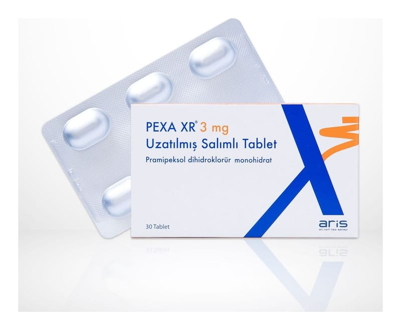

Pexa XR 3 mg Uzatılmış Salımlı Tablet, 30 Adet

Ne için kullanılır
KT · Bölüm 12. PEXA XR’ı kullanmadan önce dikkat edilmesi gerekenler 3. PEXA XR nasıl kullanılır? 4. Olası yan etkiler nelerdir? 5. PEXA XR’ın saklanması
Başlıkları yer almaktadır.
1. PEXA XR nedir ne için kullanılır?
PEXA XR 3 mg uzatılmış salımlı tabletler, beyaz renkli, bikonveks (her iki yüzü dış bükey şeklinde) ve ovaldir. PEXA XR 3 mg uzatılmış salımlı tablet, 30 tablet içeren blister ambalajlarda piyasaya sunulmaktadır.
PEXA XR uzatılmış salımlı tablet, pramipeksol adı verilen bir ilaç etkin maddesini içerir ve dopamin agonisti adı verilen bir ilaç grubuna dahildir. Bu grup ilaçlar, beyindeki bazı algılayıcıları (dopamin reseptörleri) uyararak etki gösterir. Dopamin reseptörlerinin uyarılması, beyindeki sinir sinyallerini tetikleyerek vücut hareketlerinin kontrol edilmesine yardımcı olur.
PEXA XR uzatılmış salımlı tablet, primer (ilk defa ortaya çıkan) Parkinson hastalığının belirtilerinin tedavisinde tek başına veya levodopa (Parkinson hastalığında kullanılan diğer bir ilaç) ile birlikte kullanılabilir.